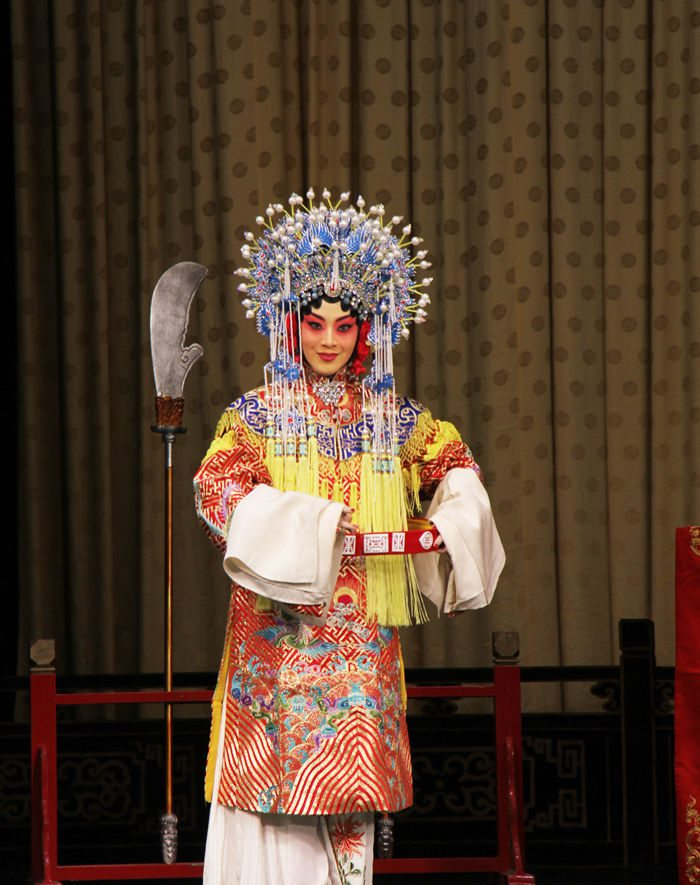

姜亦珊唱出女主人的柔情
河北京剧网 2016-06-15
在纪念张君秋先生的系列演出中，张派再传弟子，梅花奖得主姜亦珊连续在三场演出里，以清唱和彩唱的形式再现了张派经典唱段与表演，给观众以耳目一新的感觉。
《状元媒》中的“自那日”一段是戏迷很喜爱的唱段，在一些演员的演唱特别是清唱的时候，均表现得很卖力气，卯上了唱，而姜亦珊在清唱这一段时，却有自己的想法，即从人物的感情心理出发，很细腻而温柔地处理了这段唱。柴郡主在宫中回顾自己遇险被救的过程，充满着对爱情的憧憬，她已将珍珠衫作为爱情信物与订婚凭证赠与救她的杨六郎，只等着过了令公令婆的检验关，情郎的笃信关和叔王的批准关，便可以幸福地入洞房了。这段唱是一位久居宫中的青年女子心路历程的真实展现，也可以认为是自言自语，浮想联翩，因此不易唱得刚劲十足。虽然张派演唱的特点之一是清亮，但看用在哪里合适，这一折和后面郡主听到叔王要将她许配付丁奎的几段都可以用上。但在“自那日”一段，还是要依据女主人的心情唱得温馨一些为好。姜亦珊的处理是很恰当的。“在潼台被贼擒性命好险”唱得高亢一些，表现了当时的惊恐，后边的“救我回还”的拖腔以活泼俏丽来体现。“百姓们闺房乐如花美眷”，把期盼美满婚姻，脱离宫中封闭状态的心情告诉了戏迷，接下来的几个“但愿得”前几句仍然是心底的祝愿，是事关个人的因缘，直至“保叔王锦绣江山”翻高唱，体现她的家园情怀，愿与杨家将共同抵御外侮的志愿，到“愿天下有情人终成姻眷”又恢复了一位女性的祝福，以“国泰民安”作为最终的祝愿，自然以抒情的唱法结束。唱到这里时，观众看到亦珊的脸上浮现出美丽的笑容。
一段时间以来，某些观众在剧场中忽视了听唱听韵味儿的欣赏要点，只对高亢的唱腔给以掌声，对嘎调大声叫好，这当然不错，但高腔并不能代替好唱腔，唱腔是根据剧情与人物设计的，一出戏，剧中人物不可能都唱高亢的，还是要从人物的心情出发来处理。某些欣赏者只对高腔鼓励，也误导了一些演员脱离剧情与人物，一味地以高腔悦人，动不动是使足了劲换取掌声，这就进入了误区，形成了恶性循环。姜亦珊在“自那日”清唱时的处理把女性对爱情的美好向往给以温馨处理，该柔的柔，该刚的刚，是应该称道的。
再看亦珊演出的《望江亭》，“观中”一折，也是很精彩的。“来了”一句叫板，未见人先闻声，脆亮响堂，“独守空帷”先得戏迷叫好，“蒙师父”四句再获掌声，“身列先班”的拖腔也赢得满堂好。以上唱腔并不都是高腔或翻着唱的，而是唱出了少妇的愁怅和盼望结束这种生活的心情，直至遇见白士中，才在“南梆子”唱腔中“翩翩的少年”以高腔献艺，“穿红举案”和“可领会诗内的隐言”均以张派唱腔的魅力得到戏迷的鼓掌。得益于张君秋与琴师等创造的动听唱腔，《望江亭》百演不衰，女性弟子们在传承中均各具特色。我看亦珊这出戏已经三次，这次又听了一折，每次都感受到她在唱腔与表演上有提高有进步，逐渐完美，愿亦珊再接力攀高峰。
评论